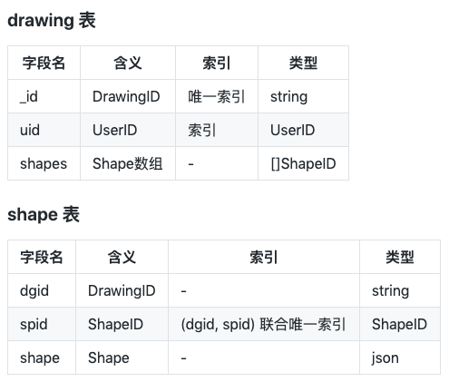

- 00 开篇词 怎样成长为优秀的软件架构师？.md
- 01 架构设计的宏观视角.md
- 02 大厦基石：无生有，有生万物.md
- 03 汇编：编程语言的诞生.md
- 04 编程语言的进化.md
- 05 思考题解读：如何实现可自我迭代的计算机？.md
- 06 操作系统进场.md
- 07 软件运行机制及内存管理.md
- 08 操作系统内核与编程接口.md
- 09 外存管理与文件系统.md
- 10 输入和输出设备：交互的演进.md
- 11 多任务：进程、线程与协程.md
- 12 进程内协同：同步、互斥与通讯.md
- 13 进程间的同步互斥、资源共享与通讯.md
- 14 IP 网络：连接世界的桥梁.md
- 15 可编程的互联网世界.md
- 16 安全管理：数字世界的守护.md
- 17 架构：需求分析 (上).md
- 18 架构：需求分析 (下) · 实战案例.md
- 19 基础平台篇：回顾与总结.md
- 20 桌面开发的宏观视角.md
- 21 图形界面程序的框架.md
- 22 桌面程序的架构建议.md
- 23 Web开发：浏览器、小程序与PWA.md
- 24 跨平台与 Web 开发的建议.md
- 25 桌面开发的未来.md
- 26 实战（一）：怎么设计一个“画图”程序？.md
- 27 实战（二）：怎么设计一个“画图”程序？.md
- 28 实战（三）：怎么设计一个“画图”程序？.md
- 29 实战（四）：怎么设计一个“画图”程序？.md
- 30 实战（五）：怎么设计一个“画图”程序？.md
- 31 辅助界面元素的架构设计.md
- 32 架构：系统的概要设计.md
- 33 桌面开发篇：回顾与总结.md
- 34 服务端开发的宏观视角.md
- 35 流量调度与负载均衡.md
- 36 业务状态与存储中间件.md
- 37 键值存储与数据库.md
- 38 文件系统与对象存储.md
- 39 存储与缓存.md
- 40 服务端的业务架构建议.md
- 41 实战（一）：“画图”程序后端实战.md
- 42 实战（二）：“画图”程序后端实战.md
- 43 实战（三）：“画图”程序后端实战.md
- 44 实战（四）：“画图”程序后端实战.md
- 45 架构：怎么做详细设计？.md
- 46 服务端开发篇：回顾与总结.md
- 47 服务治理的宏观视角.md
- 48 事务与工程：什么是工程师思维？.md
- 49 发布、升级与版本管理.md
- 50 日志、监控与报警.md
- 51 故障域与故障预案.md
- 52 故障排查与根因分析.md
- 53 过载保护与容量规划.md
- 54 业务的可支持性与持续运营.md
- 55 云计算、容器革命与服务端的未来.md
- 56 服务治理篇：回顾与总结.md
- 57 心性：架构师的修炼之道.md
- 58 如何判断架构设计的优劣？.md
- 59 少谈点框架，多谈点业务.md
- 60 架构分解：边界，不断重新审视边界.md
- 61 全局性功能的架构设计.md
- 62 重新认识开闭原则 (OCP).md
- 63 接口设计的准则.md
- 64 不断完善的架构范式.md
- 65 架构范式：文本处理.md
- 66 架构老化与重构.md
- 67 架构思维篇：回顾与总结.md
- 68 软件工程的宏观视角.md
- 69 团队的共识管理.md
- 70 怎么写设计文档？.md
- 71 如何阅读别人的代码？.md
- 72 发布单元与版本管理.md
- 73 软件质量管理：单元测试、持续构建与发布.md
- 74 开源、云服务与外包管理.md
- 75 软件版本迭代的规划.md
- 76 软件工程的未来.md
- 77 软件工程篇：回顾与总结.md
- 加餐 如何做HTTP服务的测试？.md
- 加餐 实战：“画图程序” 的整体架构.md
- 加餐 怎么保障发布的效率与质量？.md
- 热点观察 我看Facebook发币（上）：区块链、比特币与Libra币.md
- 热点观察 我看Facebook发币（下）：深入浅出理解 Libra 币.md
- 用户故事 站在更高的视角看架构.md
- 答疑解惑 想当架构师，我需要成为“全才”吗？.md
- 结束语 放下技术人的身段，用极限思维提升架构能力.md
- 课外阅读 从《孙子兵法》看底层的自然法则.md
42 实战（二）：“画图”程序后端实战
你好，我是七牛云许式伟。
在上一章，我们实现了一个 mock 版本的服务端，代码如下：
接下来我们将一步步迭代，把它变成一个产品级的服务端程序。
我们之前已经提到，服务端程序的业务逻辑被分为两层：底层是业务逻辑的实现层，通常我们有意识地把它组织为一颗 DOM 树。上层则是 RESTful API 层，它负责接收用户的网络请求，并转为对底层 DOM 树的方法调用。
上一讲我们关注的是 RESTful API 层。我们为了实现它，引入了 RPC 框架 restrpc 和单元测试框架 qiniutest。
这一讲我们关注的是底层的业务逻辑实现层。
使用界面（接口）
我们先看下这一层的使用界面（接口）。从 DOM 树的角度来说，在这一讲之前，它的逻辑结构如下：
<Drawing1>
<Shape11>
...
<Shape1M>
...
<DrawingN>
从大的层次结构来说只有三层：
- Document => Drawing => Shape
那么，在引入多租户（即多用户，每个用户有自己的 uid）之后的 DOM 树，会发生什么样的变化？
比如我们是否应该把它变成四层：
Document => User => Drawing => Shape
<Shape111> ... <Shape11M>…
…
我的答案是：多租户不应该影响 DOM 树的结构。所以正确的设计应该是：
<Drawing1>, 隶属于某个<uid>
<Shape11>
...
<Shape1M>
...
<DrawingN>, 隶属于某个<uid>
也就是说，多租户只会导致 DOM 树多了一些额外的约定，通常我们应该把它看作某种程度的安全约定，避免访问到没有权限访问到的资源。
所以多租户不会导致 DOM 层级变化，但是它会导致接口方法的变化。比如我们看 Document 类的方法。之前，Document 类接口看起来是这样的：
func (p *Document) Add() (drawing *Drawing, err error)
func (p *Document) Get(dgid string) (drawing *Drawing, err error)
func (p *Document) Delete(dgid string) (err error)
现在它变成了：
// Add 创建新drawing。
func (p *Document) Add(uid UserID) (drawing *Drawing, err error)
// Get 获取drawing。
// 我们会检查要获取的drawing是否为该uid所拥有，如果不属于则获取会失败。
func (p *Document) Get(uid UserID, dgid string) (drawing *Drawing, err error)
// Delete 删除drawing。
// 我们会检查要删除的drawing是否为该uid所拥有，如果不属于删除会失败。
func (p *Document) Delete(uid UserID, dgid string) (err error)
正如注释中说的那样，传入 uid 是一种约束，我们无论是获取还是删除 drawing ，都会看这个 drawing 是不是隶属于该用户。
对于 QPaint 程序来说，Document 类之外其他类的接口倒是没有发生变化。比如 Drawing 类的接口如下：
func (p *Drawing) GetID() string
func (p *Drawing) Add(shape Shape) (err error)
func (p *Drawing) List() (shapes []Shape, err error)
func (p *Drawing) Get(id ShapeID) (shape Shape, err error)
func (p *Drawing) Set(id ShapeID, shape Shape) (err error)
func (p *Drawing) SetZorder(id ShapeID, zorder string) (err error)
func (p *Drawing) Delete(id ShapeID) (err error)
func (p *Drawing) Sync(shapes []ShapeID, changes []Shape) (err error)
但是这只是因为 QPaint 程序的业务逻辑比较简单。虽然我们需要极力避免接口因为多租户而产生变化，但是这种影响有时候却是不可避免的。
另外，在描述类的使用界面时，我们不能只描述语言层面的约定。比如上面的 Drawing 类，我们引用图形（Shape）对象时，用的是 Go 语言的 interface。如下：
type ShapeID = string
type Shape interface {
GetID() ShapeID
}
但是，是不是这一接口就是图形（Shape）的全部约束？
答案显然不是。
我们先看一个最基本的约束：考虑到 Drawing 类的 List 和 Get 返回的 Shape 实例，会被直接作为 RESTful API 的结果返回。所以，Shape 已知的一大约束是，其 json.Marshal 结果必须符合 API 层的预期。
至于在“实战二”的代码实现下，我们对 Shape 完整的约束是什么样的，欢迎你留言讨论。
数据结构
明确了使用界面，下一步就要考虑实现相关的内容。可能大家都听过这样一个说法：
程序 = 数据结构 + 算法
它是一个很好的指导思想。所以当我们谈程序的实现时，我们总是从数据结构和算法两个维度去描述它。
我们先看数据结构。
对于服务端程序，数据结构不完全是我们自己能够做主的。在 “[36 | 业务状态与存储中间件]”这一讲中我们说过，存储即数据结构。所以，服务端程序在数据结构这一点上，最为重要的一件事是选择合适的存储中间件。然后我们再在该存储中间件之上组织我们的数据。
对于 QPaint 的服务端程序来说，我们选择了 mongodb。
为何是 mongodb，而不是某种关系型数据库？
最重要的理由，是因为图形（Shape）对象的开放性。因为图形的种类很多，它的 Schema 不是我们今天所能够提前预期的。故此，文档型数据库更为合适。
确定了基于 mongodb 这个存储中间件，我们下一步就是定义表结构。当然表（Table）是在关系型数据库中的说法，在 mongodb 中我们叫集合（Collection）。但是出于惯例，我们很多时候还是以 “定义表结构” 一词来表达我们想干什么。
我们定义了两个表（Collection）：drawing 和 shape。其中，drawing 表记录所有的 drawing，而 shape 表记录所有的 shape。具体如下：

我们重点关注索引的设计。
在 drawing 表中，我们为 uid 建立了索引。这个比较容易理解：虽然目前我们没有提供 List 某个用户所有 drawing 的方法，但这是迟早的事情。
在 shape 表中，我们为 (dgid, spid) 建立了联合唯一索引。这是因为 spid 作为 ShapeID ，是 drawing 内部唯一的，而不是全局唯一的。所以，它需要联合 dgid 作为唯一索引。
算法
谈清楚了数据结构，我们接着聊算法。
在 “程序 = 数据结构 + 算法” 这个说法中，“算法” 指的是什么？
在架构过程中，需求分析阶段，我们关注用户需求的精确表述，我们会引入角色，也就是系统的各类参与方，以及角色间的交互方式，也就是用户故事。
到了详细设计阶段，角色和用户故事就变成了子系统、模块、类或者函数的使用界面（接口）。我们前面一直在强调，使用界面（接口）应该自然体现业务需求，就是强调程序是为用户需求服务的。而我们的架构设计，在需求分析与后续的概要设计、详细设计等过程之间也有自然的延续性。
所以算法，最直白的含义，指的是用户故事背后的实现机制。
数据结构 + 算法，是为了满足最初的角色与用户故事定义，这是架构的详细设计阶段核心关注点。以下是一些典型的用户故事：
创建新drawing (uid):
dgid = newObjectId()
db.drawing.insert({_id: dgid, uid: uid, shapes:[]})
return dgid
取得drawing的内容 (uid, dgid):
doc = db.drawing.findOne({_id: dgid, uid: uid})
shapes = []
foreach spid in doc.shapes {
o = db.shape.findOne({dgid: dgid, spid: spid})
shapes.push(o.shape)
}
return shapes
删除drawing (uid, dgid):
if db.drawing.remove({_id: dgid, uid: uid}) { // 确保用户可删除该drawing
db.shape.remove({dgid: dgid})
}
创建新shape (uid, dgid, shape):
if db.drawing.find({_id: dgid, uid: uid}) { // 确保用户可以操作该drawing
db.shape.insert({dgid: dgid, spid: shape.id, shape: shape})
db.drawing.update({$push: {shapes: shape.id}})
}
删除shape (uid, dgid, spid):
if db.drawing.find({_id: dgid, uid: uid}) { // 确保用户可以操作该drawing
if db.drawing.update({$pull: {shapes: spid}}) {
db.shape.remove({dgid: dgid, spid: spid})
}
}
这些算法的表达整体是一种伪代码。但它也不完全是伪代码。如果大家用过 mongo 的 shell 的话，其实能够知道这里面的每一条 mongo 数据库操作的代码都是真实有效的。
另外，从严谨的角度来说，以上算法中凡是涉及到多次修改操作的，都应该以事务形式来做。比如删除 drawing 的代码：
if db.drawing.remove({_id: dgid, uid: uid}) { // 确保用户可删除该drawing
db.shape.remove({dgid: dgid})
}
假如第一句 drawing 表的 remove 操作执行成功，但是在此时发生了故障停机事件导致 shape 表的 remove 没有完成，那么从用户的业务逻辑角度来说一切都正常，但是从系统维护的角度来说，系统残留了一些孤立的 shape 对象，永远都没有机会被清除。
网络协议
考虑到底层的业务逻辑实现层已经支持多租户，我们网络协议也需要做出相应的修改。这一讲我们只做最简单的调整，引入一个 mock 的授权机制。如下：
Authorization QPaintStub <uid>
既然有了 Authorization，那么我们就不能继续用 restrpc.Env 作为 RPC 请求的环境了。我们自己实现一个 Env，如下：
type Env struct {
restrpc.Env
UID UserID
}
func (p *Env) OpenEnv(rcvr interface{}, w *http.ResponseWriter, req *http.Request) error {
auth := req.Header.Get("Authorization")
pos := strings.Index(auth, " ")
if pos < 0 || auth[:pos] != "QPaintStub" {
return errBadToken
}
uid, err := strconv.Atoi(auth[pos+1:])
if err != nil {
return errBadToken
}
p.UID = UserID(uid)
return p.Env.OpenEnv(rcvr, w, req)
}
把所有的 restrpc.Env 替换为我们自己的 Env，再对代码进行一些微调（Document 类的调用增加 env.UID 参数），我们就完成了基本的多租户改造。
改造后完整的 RESTful API 层代码如下：
结语
总结一下今天的内容。
今天我们主要改造的是底层的业务逻辑实现层。
一方面，我们对使用界面（接口）作了多租户的改造。多租户改造从网络协议角度来说，主要是增加授权（Authorization）。从底层的 DOM 接口角度来说，主要是 Document 类增加 uid 参数。
另一方面，我们基于 mongodb 完成了新的实现。我们对数据结构和算法作了详细的描述。要更完整了解实现细节，请重点阅读以下两个文件：
- https://github.com/qiniu/qpaint/blob/v42/paintdom/README_IMPL.md.html
- https://github.com/qiniu/qpaint/blob/v42/paintdom/drawing.go
如果你对今天的内容有什么思考与解读，欢迎给我留言，我们一起讨论。下一讲开始我们继续实战。
如果你觉得有所收获，也欢迎把文章分享给你的朋友。感谢你的收听，我们下期再见。
© 2019 - 2023 Liangliang Lee. Powered by gin and hexo-theme-book.